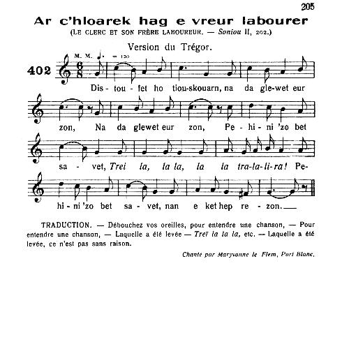

Meilher
Meunier
Miller
Chant collecté par Théodore Hersart de La Villemarqué
dans le 1er Carnet de Keransquer (p. 133).
Mélodie|
"Ar c'hloarek hag e vreur labourer" tiré de "Gwerzioù ha Sonnioù Breiz-Izel" de Maurice Duhamel (1913), mélodie pour le chant homonyme des Sonioù de Luzel, Livre II: chant N°402 p. 205, version du Trégor, chantée par Maryvonne Le Flem de Port-Blanc. Dans l'ouvrage de Bourgault-Ducoudray, "Trente mélodies populaires de Basse-Bretagne" publié en 1885, la présente mélodie est citée comme un exemple type de mode myxolydien. |
"Ar c'hloarek hag e vreur labourer" from "Gwerzioù ha Sonnioù Breiz-Izel" by Maurice Duhamel (1913), the tune to the homonymous song in Luzel's "Sonioù", Book II, song N°402, p. 205; a Tréguier area version sung by Maryvonne Le Flem from Port-Blanc. In Bourgault-Ducoudray's collection, "Trente mélodies populaires de Basse-Bretagne" published in 1885, the present melody is presented as an archetypal tune in the Myxolydian mode. |

|
BREZHONEK Meilher [1] p. 133 I 1. Digorit ho kenoù, koukou! Ha c'hwi klefet ur zon Ha c'hwi klefet ur zon Ur zon hag a zo kompozet Tri la lala lala ladira la Ur zon hag a zo kompozet Ha n'eo ket hep rezon. 2. Savet d'ur kloarek yaouank Hag e vreur labourer, Hag e vreur labourer, Int o deus plantet ur rozenn Tri la lala lala ladira la Int o deus plantet ur rozenn E ti ur miliner. 3. Mamm an daou paotr disoursi A oa un intañvez, paour kaezh! A oa un intañvez, Hag o c'hasas-hi d'ar vilin Tri la lala lala ladira la Hag o c'hasas-hi d'ar vilin Goude koan, un nozvezh. 4. Na ma laras dar chloarec: «Blamit ar miliner, Rak ouzh-a bep eureuvel, ch a gantan an hanter.» [2] 5. Pa oant degouet er vilin, Ez aent da c'houl malañ, ya da, Ez aent da c'houl malañ - Mar plij ganeoch, emeze, Tri la lala lala ladira la Mar plij ganeoch, emeze, Evit hon oblijan. - 6. Mar oa a(z)e ar miliner: - Petra a zo eta? ya da Petra a zo eta? - Ar zac'had ne'ez a zo êd du, Tri la lala lala ladira la Ar zac'had ne'ez a zo êd du, tutu, An all segal bara. 7. Ha me a zo ar c'hloarek, Me yay war ar gerlenn, Me yay war ar gerlenn Me yay war ar gerlenn, amen Tri la lala lala ladira la Me yay war ar gerlenn, amen Ha va breur e-kichen. II Wit ampich ar miliner da gass ganthan he droet. Setu kenta finesse a eure ar chloarec. Pennherès ar miliner, diouz he vroeg kentan, chalwas he zad en ti, hac a laras dezhan: Ho ! bezet sonj, emezhi, pa valfet ann ed-du, Beza bleud dober crampouz, mar cavet lech pe du. Na gredan ket, emezhan, am be na bleud na brenn; E-man ar chloarec dindan, al labourer war benn. Tawet ma zad, emezhi, mho chasso a lech-se. Hac hi tistagan r chezec, ho leuskel da vale : Hac hi retorn dar vilinn, o lâret dar chloarec: Poent ê dech, mezhi, goazed, mont warlerch ho kezec! Ho ! lest-int, me ar chloarec, nant kel e-mès ar vro; Pa vefomp prest de zamman, eun tu nin ho chavo. III Setu ann eil finesse a eure ar chloarec, Och amari r zachadou, goude ma oant malet, Ober eur chachet fissel war bep-hini an-hè. War zinn kerched ho chezec, e sortijont neuze. Ar plach a iès gant eur jarr da wit bleud dar zachad: [3] Pa welas ann amaro, hac hi lâret dhe zad: Rèd a vô stagan ar sach en pign ouz eur c'hordenn, Hac hen pilad gant eur vaz, a ust deul linsel wenn. - Ar bôtred a oa scuizet, na oant ket êt pell-meur, Ha mont ar chloarec iaouanc o lavaret dhe vreur: Zilaou, ma breur, emezhan, noun petra meus clewet. Me gred man ar miliner o vachatan he vroeg. - Hi o retorn da zellet, dre eun foul oa en nôr ; Na gredjont ket gant ar vez goulenn out-he digor. Lèz-int, eme ar chloarec, na chomfomb ket e-mès; Pa eo gôbret hon zachad, nin m omp lod ar chrampoès. - IV ...Zellet aman, miliner, penoz ez omp glebiet! Bet omp dre-hol o vale, ha collet hon chezec. Tefall eo, deuz ar gwassan, ha pell omp deuz ar gêr: Fenoz a rencfomp lojan en ho ti, miliner. Ma joa, me ar miliner ! Beza zo tri guele : Ma roeg ha me en unan, ma merch en egile, Ha setu aze eun all ha na ve den en-han. Ch êr breman dober crampoés, hac a pô da goanian. Pa oa debret ho choanio, hac hi vont da gousked; Ar chloarec a dirochè, mes dre he vizied, A welas ar bennherès och ober diou grampoenn, Hac o pacan eur roched en eur bonet lienn. Amourous ar bennherès a glefoa, en noz-se, Dont da em divertissan gant-hi, en he guele; Met ar chloarec a zantas, a iès da doul ann nor, Scoas dousic warnezhi, hac hen defoe digor, Ar bennherès a zonje, pa zigorras ann nôr, Oa ann hini ordinal a choulenne digor; Hac hi o laret dezhan : "Deut en ho cuele prest, Ha pa pô debret ho coan, guisket ho roched fresq." Amourous ar bennherès eun neubeudic goude, Pa oa ar chloarec ganthi, a erruas ive, Homan, a sonje ganthi oa ar chloarec iaouanc, O teurel en he visaj cazi leiz he fot-cambr. Mont a eure achane, hep dout a oa fachet, En eur leuskel mil malloz war galon ar merched. Gwalchi rencas he dillad kent mont dirac he dud ; Chouez ar christen, peurvuia, a gustum beza put. Pa difun al labourer, hac hen o font e-mès, Na ma santas oa he vreur en cambr ar bennherès. V Ha zellet ar finesse eure al labourer Da dromplan he vreur cloarec ha groeg ar miliner! Pa retornas dhe wele, e tigass ar chawel A gichenn guele n ozach, hep difunin r bugel, Er choste all dann oaled, da gichenn he hini. Eun neubeudic da choude, ar vroeg o tifuni. Mont eure ar vagerès e-mès, da em êzin, Hac a oa choaz morgousket pa retornas dann ti ; Troublet oa he zantimant da vroeg ar miliner, Ma ch es, diouz ar chawel, da vêt al labourer. Noch eus ezom da choulenn, pa oa êt da vèt-han, Hac hen hen efoa dessign da em divertissan : Al louarn pa dap eur iar, nhi losq ket da redec ; Eun den en tal eur feunteun na vir ket he zeched. VI Phen efoa r chloarec iaouanc kemerret he gonje, Deuz a gambr ar bennherès a deuas dhe wele. Arru en tâl he wele, a gafas ar chawel, Hac hen vont er choste-all, da vèt ar miliner. Setu tromplet ar chloarec, gant he hol finesse, Pa eo diouz ar chawel e choasas he wele. Hac hen commans da chromman ar paour kès milinèr. Difun, ma breur, emezhan, poënt ê dimp mont dar gêr. Me na eo ket o cousked a ran ma zollio caër, Me a zo bet en noz-man gant merch ar miliner, Ha me 'm eus bet diganti ur roched ken moan, Krampousigoù üiaouët ha lès kaoulet da goan. [6] Jarni ! me ar meliner, terrupl out iffrontet, Goude da fallagriach, mar deo gwir da lâret, Ewit ma mez, emezhan, dont choaz da gontan din ; Breman am bezo rèzon deuz da iffrontiri. Ar vroeg, gant al labourer, ha da zevel he mouez : Foei ! penoz, mezhi, breudeur, nhoch eus-hu ket a vez ? Para ! me ar miliner, aze hech out ive ? Mâleur dann hini dapin, pa golfenn ma buhe ! Ann neb welje ar chloarec hac he vreur labourer, Ho dillad tre ho diou-vrech, o fourcan dre r rivier, Hac hi en noaz o redec, nemet ho rochedo, Heb clasq na tog na bonet, na boto, na lêro !... VII Nhoch eus micher da choulenn, eure ar miliner Dhe vroeg ha dar bennherès, dansal, hep caout zoner. Arajin rê r miliner, o welet e oa bet Al labourer, en noz-se, er guele gant he vroeg. Choas e peas boutaillad ar paour-kès miliner Dar chloarec, evit tewel, ha dhe vreur labourer. En amzer he vroeg kentan, hen efoa bet brud vad : Den a-bed na choull clewet a ve hanvet danvad. [4] [5] En italiques: ajouts pour suivre la mélodie, Et texte de la version Luzel |
TRADUCTION FRANCAISE Meunier [1] p. 133 I 1. Ouvrez la bouche, coucou! Et vous entendrez une chanson Et vous entendrez une chanson Une chanson qui fut composée Tri la lala lala ladira la Une chanson qui fut composée Non sans raison. 2. Au sujet d'un jeune clerc Et de son frère laboureur, Et de son frère laboureur, Qui ont planté une rose Tri la lala lala ladira la Qui ont planté une rose Dans la maison d'un meunier. 3. La mère des deux gars sans souci Etait veuve, la pauvre! Etait pauvre, Et elle les envoya au moulin Tri la lala lala ladira la Et elle les envoya au moulin Après dîner, un soir. 4. Le clerc dit alors: «Honte au meunier, Car de chaque mouture, il soustrait la moitié.» [2] 5. Quant ils arrivèrent au moulin, Ils allèrent demander qu'on veuille moudre, ya da, Demander qu'on veuille moudre - S'il-vous-plait, disaient-ils, Tri la lala lala ladira la S'il-vous-plait, disaient-ils, Pour nous obliger, - 6. Si toutefois, le meunier était là: - Qu'il y a-t-il donc? oui-da Qu'il y a-t-il donc? - Dans le sac neuf, du blé noir, Tri la lala lala ladira la Dans le sac neuf du blé noir; tutu, dans l'autre du seigle à pain,. 7. Et moi qui suis le clerc, J'irai sur la trémie, J'irai sur la trémie, J'irai sur la trémie, amen Tri la lala lala ladira la J'irai sur la trémie, amen Et mon frère, à côté d'elle. II Pour empêcher le meunier de prélever sa redevance. Tel fut le premier tour que joua le clerc. Lhéritière du meunier, née de sa première femme, Héla son père à la maison, et lui dit : Pensez, dit-elle, quand vous moudrez le blé noir, De garder de la farine pour des crêpes, si possible. Je ne crois pas, dit-il, avoir ni farine, ni son; Le clerc surveille en dessous, le laboureur au-dessus. Taisez-vous, père, dit-elle, je les ferai partir de là; Et elle de détacher les chevaux, de les lâcher en liberté: Puis, de sen retourner au moulin, et de dire au clerc: Il vous est temps, les gars, de courir après vos chevaux, Laissez-les, dit le clerc, ils n'iront pas loin; Quand nous serons prêts à charger, nous les retrouverons. III Voici le second tour que joua le clerc : Il attacha les sacs, après que (le blé) fut moulu, Il fit un nud de ficelle sur chacun deux. Sous prétexte daller rechercher les chevaux, ils sortirent. La fille alla avec une jarre prendre de la farine aux sac [3] Quand elle vit les ligatures, elle de dire à son père : Il faudra attacher (chaque) sac en pendant à une corde. Et le battre avec un bâton, au-dessus dun drap blanc. - Les gars las de guetter -ils nétaient pas allés bien loin - Le jeune clerc de dire à son frère: Écoute, frère, je ne sais quest-ce que jai entendu , Je crois que le meunier est en train de battre sa femme. - Les voilà qui reviennent regarder par un trou dans la porte. Ils nosèrent par discrétion demander quon leur ouvre. Laisse-les, dit le clerc, nous ne resterons pas dehors, Puisquon a gagé notre sac, nous aurons part aux crêpes. - IV ... Voyez un peu, meunier, comme nous sommes mouillés ! Nous avons battu les alentours, et nos chevaux sont perdus. Il fait noir au possible; nous sommes loin de chez nous ; Cette nuit, il nous faudra loger dans votre maison, meunier. Parfait! dit le meunier. Il y a trois lits : Ma femme et moi, (couchons) dans lun, ma fille dans lautre, Et en voilà un troisième, où personne ne couche. On va sur le champ faire des crêpes, et vous aurez à souper. - Quand ils eurent soupé, les voilà daller se coucher. Le clerc qui ronflait, mais par les doigts, Vit lhéritière faire deux crêpes, Et envelopper une chemise dans un bonnet de toile: Lamoureux de lhéritière devait, cette nuit-là, Venir se divertir avec elle, dans son lit ; Mais le clerc flaira la chose, alla au seuil de la porte, Y frappa doucement, et se fit ouvrir. Lhéritière simaginait, en ouvrant la porte, Que cétait le visiteur habituel qui priait quon lui ouvre. Et elle de lui dire : « Venez en votre lit, promptement, Et quand vous aurez soupé, passez votre chemise fraîche.» Lamoureux de lhéritière, peu après, Comme le clerc était (couché) avec elle, arriva aussi. Celle-ci, pensant que cétait le jeune clerc, Lui jeta à la figure presque plein son pot de chambre. Il sen alla, sans doute était-il fâché, En expectorant mille malédictions contre le cur des filles; Il dut laver ses hardes, avant de paraître devant les siens : Lurine dun chrétien, généralement, sent laigre. Quand séveille le laboureur, il sort (de son lit) Il comprend que son frère est dans la chambre de lhéritière. V Et voyez la finesse queut le laboureur. Pour tromper son frère et la femme du meunier. En retournant au lit, il emporte le berceau Dauprès du lit du mari, sans réveiller lenfant, De lautre côté du foyer, près de son lit à lui. Peu après, la femme de se réveiller. La mère-nourrice alla se soulager, Encore à moitié endormie, elle rentra dans la maison On avait dérouté la femme du meunier, Elle alla, se guidant sur le berceau, rejoindre le laboureur. Pas besoin de demander, quand elle l'eût rejoint, Sil pensa à se bien divertir. Le renard, qui attrape une poule, ne la laisse plus courir; Un homme, près dune fontaine, ne garde pas sa soif... VI Lorsque le jeune clerc eut pris congé (de la fille), De la chambre de lhéritière il revint à son lit. Arrivé près de son lit, il trouva le berceau, Et il passer de lautre côté et va trouver le meunier. Voilà le clerc joué, malgré toute sa finesse, Puisque cest daprès le berceau quil choisit son lit. Et il se met à secouer le pauvre cher meunier : Réveille-toi, frère, il est temps daller à la maison. Moi, ce nest pas en dormant que je fais mes prouesses ; Jai passé cette nuit avec la fille du meunier, Et jai eu delle une chemise de toile fine, Et des crêpes lardées dufs et du lait caillé, pour souper. [6] Jarni ! dit le meunier, tu en a du toupet, Après ton forfait, si ce que tu dis est vrai, Pour ma grande honte, de me le venir encore conter! (Mais) je vais punir sur-le-champ de ton effronterie. Sa femme, qui était avec le laboureur, de crier elle aussi: Fi donc! les frères, vous navez pas de honte? Comment, dit le meunier, cest là que tu es aussi, toi ? Malheur à celui que jattrape, dussé-je y laisser la vie ! - Il eût fallu voir le clerc et son frère laboureur, Leurs hardes sur les bras, décamper, à travers la rivière, A toutes jambes, tout nus, sans chemises, Sans chapeau, ni bonnet, ni chaussures, ni bas! VII Point nest besoin de demander ce que fit le meunier A sa femme et à lhéritière: il les fit danser sans sonneurs. Il enrageait, le meunier, de voir quavait été Le laboureur, cette nuit-là, au lit avec sa femme; Encore paya-t-il bouteille, le pauvre cher meunier, Pour obtenir leur silence, au clerc et à son frère laboureur. Du temps de sa première femme, il avait bonne réputation: Personne naime à sentendre appeler mouton (cornard). [4] [5] Traduction: François-Marie Luzel |
ENGLISH TRANSLATION Miller [1] p. 133 I 1. Open your mouth, cuckoo! And you shall hear a song And you shall hear a song A song newly composed Tri la lala lala ladira la A song newly composed Not without reason. 2. About a young clerk And his brother, a farmer, His brother, a farmer, The two planted a rose Tri la lala lala ladira la The two planted a rose In a miller's house. 3. The mother of the two scatterbrains She was a widow, alas! She was a widow, She sent them to the mill Tri la lala lala ladira la She sent them to the mill One evening, after dinner. 4. And she said to the clerk: «Shame on the miller! Whatever he grinds, he always spirits away half of it.» [2] 5. When they arrived in the mill, They asked them to grind their grain, Asked them to grind their grain - If you please, they said Tri la lala lala ladira la If you please, they said, Do us a favour! - 6. Then came the miller: - What kind of grain, said he What kind of grain is that? - In the new sack is buckwheat, Tri la lala lala ladira la In the new sack buckwheat, no cheat, In the other rye for bread. 7. Since I am a clerk, I'll stay above the grain funnel, Above the grain funnel Above the grain funnel, amen Tri la lala lala ladira la Above the grain-funnel, amen My brother beside it. II To prevent the miller from taking rights of his own. This was the clerk's first trickery. The miller's heiress, by his first wife, Called in her father and said to him: Mind, said she, when you grind their buckwheat, That you take from it enough flour for pancakes. I don't think, said he, there will be any flour or bran; The clerk is above, the farmer underneath. What does it matter?, said she, I'll drive them away! - And she untied the horses who dashed off: She returned to the mill and said to the clerk: It's time, boys, said she, you recaptured your horses! Leave them alone, the clerk said, they won't go that far; When we're ready to load them, we'll catch them, I'm sure. III Now comes the clerk's second trickery, He tied up the sacks, after the grain was ground. He made a knot in the string for each of them Under pretext of fetching their horses, then they went out. The girl hastened with a jar to take flour from the sacks [3]. When she saw the ties she said to her father: We will have to hang each sack on a rope , And to hit them with a stick above a white sheet. - The boys were tired; they had not gone far, The young clerk said to his brother: Listen, brother, said he, I wonder what I am hearing. I think the miller is beating his wife. - And they came back to peep through a hole in the door; And they refrained from asking for admittance. Let them do, said the clerk, we shan't stay out of it; Our sackfills were left as security: we shall get part of the pancakes. - IV ... Look here, miller, we are soaked to the skin! We have scoured the country around: our horses are lost. It is horribly dark, and we are far from home: We must sleep overnight in your house, miller. With pleasure, said the miller! We happen to have three beds: One for my wife and me, one for my daughter, And here is another bed that is empty. Now pancakes will be made, and we shall have your dinner. - When their dinner was finished, they went to bed; The clerk snored, but in fact he pretended to, He saw how the heiress made two pancakes, And wrapped up a nightshirt and a nightcap. The heiress' lover, was to come that night And to have entertainment with her in bed; But the clerk smelt a rat: he sneaked to the door, Gently knocked at it, and he was let in, The heiress imagined, on opening the door, It was her customary visitor; And she told him: - Quick, come to bed, As soon as you have had your dinner and put on a fresh nightshirt. - The heiress' lover, just a bit later on, When the clerk was with her, turned up too. She imagined here was the young clerk coming: She threw to his face almost the whole content of her chamber pot! The boy went away, without doubt he was angry, Calling a thousand curses down on girl's hearts. He had to cleanse his clothes before he went home: HUman pee 's odour usually is pungent! Now the farmer awoke and went out, He guessed that his brother was in the heiress' bedroom. V And listen to the practical joke played by the farmer On his brother the clerk and the miller's wife! When he went back to his bed, he pushed the cradle Away from the miller's bed, without waking up the child, To the other side of the hearth, close to his own bed. A little bit later, the goodwife awoke. The nurse-wife went out to relieve herself, And she was still half-asleep when she returned into the house; All confused was the miller's wife And she laid herself, by the cradle misled, down by the farmer's side. No use to ask, when she came over to him If he meant to have entertainment: Whenever a fox snatches a hen, it won't allow her to run away; Whenever a man has found a source, he doesn't keep thirsty . VI When the young clerk took his leave, He tried to go from the heiress' room back to his bed. In front of his bed he found the cradle, And he went to the other side, towards the miller. In spite of his cunning, it was his turn to be fooled When he chose his bed, guiding himself on the cradle. And he started shaking the poor miller Wake up, brother he said, it's time to go home. It is not by sleeping that I come to great achievements: I spent the night with the daughter of the miller , She gave me a shirt of thin cloth And I had a dinner of egg pancakes and curds, [6] Shiver my timbers! said the miller, you're an insolent fellow! You commit an infamy, as far as you tell the truth, And, alas and fie for shame, you come and tell me about it; Now I shall obtain satisfaction for your effrontery! His wife who was with the farmer, began to speak loudly: - Ye brothers, are the two of you not ashamed ? Why! shouted the miller, you are over there, too? I'll kill whoever I first catch, even if I must die afterwards! Did you see the clerk and his brother, the farmer, With their rags on their arms, running across the ford, As fast as they could, with nothing on but their shirts? Little did they care for hat or cap or shoes or socks!... VII No need to ask if the miller Made his wife and heiress dance without a band. He was in a rage, at realizing That the farmer had been, that night, with his wife in a bed. Moreover, the unfortunate miller had to pay The clerk and the farmer a bottle, the price of their silence . In his first wife's lifetime, he had a good repute with people: Nobody wants to be called a cuckold! [4] [5] |
NOTES:
|
[1] Bibliographie: Manuscrits: - Coll. Lédan, I. "Chanson grêt da eur c'hloarec ha d'e vreur labourer." - Luzel, N. acqu. françaises, 3342, "Le jeune kloarek et son frère le labourer (trad.) (Plouaret, 1844). Recueils: - Luzel, Sonioù 2: "Ar c'hloarek hac he vreur labourer". Périodiques: - Milin, Gwerzioù I: "Ar c'hloarek hac he vreur labourer". [2] Versions La Villemarqué et Luzel Dès que la Villemarqué a reconnu dans ce chant une version bretonne d'un fameux conte grivois, il n'a pas jugé bon d'en noter plus de 6 strophes. On a complété ici le récit par la version trégoroise qu'en donne Luzel, recueillie à Port-Blanc et publiée dans ses "Sonioù Breiz Izel", tome II, 1891, sous le titre "Le clerc et son frère laboureur". Bien que ces 6 strophes ne présentent entre ces deux versions que des différences mineures, on peut regretter que La Villemarqué ne donne pas un texte complet. Sa chanson se distingue de son homologue dès la première ligne par une hyperbole surréaliste: "Digorit ho kenoù" (ouvrez la bouche), qui remplace une impertinence: "Distoufit ho tiouskouarn" (débouchez vos oreilles). De plus le texte de La Villemarqué utilise un procédé inconnu de la version de Port-Blanc, une sorte d'écho sous forme d'onomatopées burlesques "koukou", "tutu", "ya da" etc., dont on aimerait savoir, jusqu'où la fantaisie du barde ou du chanteur a pu le pousser. [3] Versions moralisatrices et grivoises Comme l'a noté Luzel, "Il existe sur le même sujet un fabliau français dont lauteur de notre chanson semble sêtre souvenu.". Voici les premières strophes du fabliau en question, "Le meunier et les deux clercs":
Elles donnent à ce texte du 13ème siècle (dont il existe deux manuscrits, l'un de 322 vers octosyllabiques conservé à Berne, l'autre de 291 vers, conservé à Berlin), une coloration revendicative que la suite de l'histoire justifie. Deux camarades d'enfance défavorisés par le sort et victimes d'un vol crapuleux, sont vengés par la providence: ils couchent avec la fille et la femme de leur hôte, le meunier, avant même de savoir que celui-ci leur avait subtilisé leur grain et leurs chevaux et pensait profiter de son larcin. Bref, une histoire morale! Ce fabliau eut une postérité littéraire impressionnante: plusieurs histoires où le deus ex machina est un berceau qu'on déplace et qui conduit l'épouse de l'hôte à se tromper de lit. Les commentateurs anglophones donnent à ces contes le nom générique de "cradle-trick" (la farce du berceau). Ce sont essentiellement: L'intention moralisatrice disparaît dans les autres versions qui privilégient l'aspect comique et licencieux du récit: [4] La malédiction des meuniers Dans cette seconde série, disparaît un élément essentiel: aux 13ème, 14ème et 15ème siècles, les meuniers étaient considérés comme des filous et des voleurs. D'innombrables proverbes attestaient la méfiance dont l'ensemble de la société les gratifiait. Cette idée était particulièrement répandue en Bretagne comme on l'a vu à propos du chant du Barzhaz: La meunière de Pontaro et des chants apparentés à celui-ci. La présente version, collectée avant 1839, (alors que le manuscrit de Berne du fabliau français n'a encore fait l'objet d'une 1ère description dans la "Lettre au Directeur" de M. Jubinal qu'en 1838°), vient le confirmer. Les infortunes conjugales provoquées ou subies par les meuniers ont inspiré les conteurs, semble-t-il, aussi longtemps que cette profession a été florissante. On en trouve un dernier écho dans le film de Christian-Jaque de 1938, "Les disparus de Saint-Agil", d'après le roman de Pierre Véry, où le meunier dont le moulin abrite les activités d'une bande de faux-monnayeurs a été réduit à cet expédient par un minotier qui lui a pris son métier et sa femme. Il y a fort à parier que les modernes éoliennes et les turbines marémotrices fourniront moins d'aliment que les anciens moulins à la verve populaire... [5] Clercs et fermiers Loin d'être une "chanson de clerc", ce texte confronte les talents respectifs de deux frères qui ont reçu deux genre d'éducation bien distincts: un clerc et un cultivateur (appelés ici "laboureur"). Presque tout au long de l'histoire, c'est le rusé clerc qui mène la danse. Les préceptes religieux propres à son état ne semblent le préoccuper en aucune façon et c'est lui qui est à l'origine des premières ruses. A partir de la partie V, c'est le laboureur qui, comprenant que son frère est auprès de l'héritière, décide de lui jouer un tour ainsi qu'au meunier, en déplaçant le berceau. Il bénéficie de cette opération (la meunière lui rend visite), tandis que son frère, bavard impénitent, commet l'imprudence de raconter ses exploits amoureux au maître de maison... L'histoire bretonne illustre donc la revanche d'une caste, celle des paysans, sur les artisans profiteurs que sont les meuniers et sur les gens instruits que sont les clercs. Comme pour la première partie du Yannick Scolan du Barzhaz (chapitre "Dañvad penn-gornik"), il doit être possible d'assigner une date limite approximative à ce chant à partir du dernier vers qui traite un "cornard" de "dañvad" (mouton), une rédaction qui ne peut qu'être antérieure à la disparition des brebis à cornes comme race ovine principale en Bretagne! [6] Zon nevè Cette strophe est tirée d'une "chanson nouvelle" notée par La Villemarqué, page 192.2 du carnet. M. Donatien Laurent indique qu' "elle est séparée des autres postérieurement à leur notation par un trait de séparation continu comme pour indiquer qu'elle appartient à une autre pièce. Elle se retrouve dans les différentes versions de "Meilher" (Luzel, Milin, Lédan)". Cette "son nevez" se chante sans doute sur la même mélodie que "Meilher". Elle semble être purement locale et seul La Villemarqué en a noté quelques bribes:
|
[1] Bibliography: Manuscripts: - Coll. Lédan, I. "Chanson grêt da eur c'hloarec ha d'e vreur labourer." - Luzel, N. acqu. françaises, 3342, "Le jeune kloarek et son frère le labourer (trad.) (Plouaret, 1844). Collections: - Luzel, Sonioù 2: "Ar c'hloarek hac he vreur labourer". Periodicalss: - Milin, Gwerzioù I: "Ar c'hloarek hac he vreur labourer". [2] The La Villemarqué and Luzel versions As soon as la Villemarqué identified this song as a Breton version of a famous bawdy tale, he refused to dignify it by recording more than its first six stanzas. They are completed here with the Tréguier dialect version published by Luzel, who had collected it at Port-Blanc and published in his "Sonioù Breiz Izel", book II, 1891, under the title "The Clerk and his brother, the Farmer". Though these 6 stanzas in both versions are only slightly different, we may be sorry that La Villemarqué did not commit to writing the whole "son" (song). His version differs from its Tréguier counterpart in the very first line by a surreal hyperbole: "Digorit ho kenoù" (open your mouth), which replaces a saucy invitation: "Distoufit ho tiouskouarn" (take the stoppers out of your ears!). Besides, La Villemarqué's lyrics have recourse to a device apparently missing in the Port-Blanc version, a sort of funny, onomatopoeic echo "cuckoo", "tutu", "ya da" etc., arousing our curiosity as to if and how it would be renewed all through the many stanzas the song encompasses. [3] Moralizing and bawdy versions As stated in a note by Luzel, "There is a similar French "fabliau" (verse narrative) on which our author apparently elaborated.". Here are the first stanzas of the said "fabliau", "The Miller and the two Clerks":
These first stanzas lend this 13th century poem (two MS of which the one, a 322 eight-syllable line poem, is kept in Berne, and the other, a text of 291 lines, in Berlin), a touch of social protest justified by the rest of the narrative: Two childhood mates who live in poor circumstances are robbed in a villainous way, but providentially avenged: they sleep, respectively, with the daughter and the wife of their host, the miller, though still unaware that he had stolen their grain and horses and thought he was to enjoy his spoils. In other words, a moral story! This "fabliau" had most impressive literary offspring: several tales featuring, as a "deus ex machina" a cradle that is moved about and misleads, in succession, the host's wife and one of the two mates to the wrong bed. The English speaking commentators have dubbed this series of tales "cradle-trick" tales. Here are the best known among them: The moralizing purpose is missing in later versions emphasizing the tale's comical and licentious aspects: [4] The curse on millers In the aforesaid 2nd series a capital element has disappeared: in the 13th, 14th, and 15th centuries, millers were proverbial for their thievishness and cunning. Lots of saying proclaim how much they were distrusted by society in general. This prejudice was especially spread in Brittany as we read in connection with the Barzhaz song: Pontaro Miller's Wife and the songs related to it. This is confirmed by the present version, collected before 1839, (even before the Berne MS of the French version of the tale was first exhaustively described in M. Jubinal's 1838 "Letter to the Director"). Marital misfortunes caused or suffered by millers apparently inspired storytellers, as long as this trade was flourishing. A last echo of this may be caught in Christian-Jaque's 1938 film, "The missing pupils of Saint-Agil Boys' School", after a novel by Pierre Véry, where the traditional miller whose mill harbours a money forgers' workshop was reduced to resorting to illegality by an industrial miller who robbed him of both his trade and his wife. To be sure, modern wind wheels and tide turbines are not likely to provide as much fuel to the folks' witty eloquence as did mills of old... [5] Clerks and farmers Far from being a typical "kloarek song", the present piece compares the respective merits of two brothers who were brought up in two different ways: an educated clerk and a farmer (called here "labourer"). Almost throughout the story it is the cunning clerk who leads the dance. He evidently doesn't care for the religious precepts he ought to observe as a future clergyman and he initiates the first tricks. As from Part V, it is the farmer, as soon as he figures out that his brother is in the heiress' bedroom, who decides to fool him, as well as the miller, by shifting aside the cradle. He earns benefit from this intervention (namely the visit of the miller's wife), while his unrepentantly talkative brother takes delight in telling the landlord his exploits in bed... Thus, the Breton story illustrates the revenge of a caste, that of country folks, on alleged profiteers, the millers, and on educated people, the clerks. As in the first part of the Barzhaz version of Yannick Scolan (see comments, chapter "Dañvad penn-gornik"), it should be possible to infer approximately a latest date of composition for this song, from the last line where a cuckold is called a "dañvad" (a sheep). It points to a time that must be anterior to the disappearing of the horned sheep from the Breton countryside, where it used to be the most common ovine race! [6] Zon nevè This stanza belongs in a "New Song" recorded by La Villemarqué, page 192.2 of Keransquer MS. M. Donatien Laurent states that "it was set apart from the others at a later stage by a continuous line, as it were, to mark that it belongs to another piece. It appears in several versions of "Meilher" (Luzel, Milin, Lédan)". This "son nevez" is sung very likely to the same tune as "Meilher". Its spreading area seems to be merely local and nobody recorded it, but La Villemarqué who noted only some scraps of it:
|